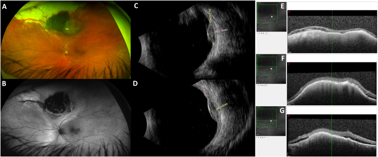
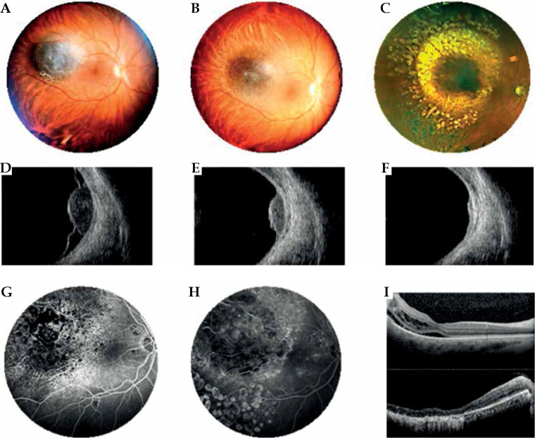
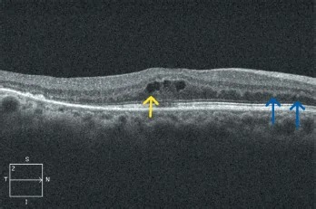

1497 — Tái phát bờ sau xạ bản mạch melanoma hắc mạc: đọc đáp ứng – tái phát – thay đổi do xạ / Marginal recurrence after plaque brachytherapy for choroidal melanoma
Tags: pattern:khoi-hac-mac pattern:tai-phat-bo pattern:day-hac-mac pattern:bong-thanh-dich vung:hac-mac vung:nhan-cau vung:mat protocol:sieu-am-B-scan protocol:sieu-am-A-scan protocol:OCT protocol:FAF protocol:MRI-hoc-mat score:Abramson-response incidentaloma:khong
Mức chắc chắn (certainty): tổng hợp y văn (literature synthesis) — dựng từ đoàn hệ 719 mắt Ru-106 (Clin Transl Radiat Oncol 2025, PMC11919603), 310 mắt xạ bản mạch/proton (BMJ Open Ophthalmol 2026, PMC12778298), 192 bệnh nhân phân loại đáp ứng theo Abramson (Sci Rep 2025, PMC12749780), 135 mắt với OCT sớm của bệnh hoàng điểm do xạ (J Contemp Brachytherapy 2026, PMC13662462), tổng quan 20 nghiên cứu/4.979 người (Heliyon 2024, PMC11414481), ca tái phát bờ 13 năm (Am J Ophthalmol Case Rep 2026, PMC13254904), ca tái phát 51,5 năm (Klin Monbl Augenheilkd 2026, PMC13095370) và atlas đáp ứng sau xạ (J Contemp Brachytherapy 2022, PMC8867240). Nhóm không có bệnh nhân của mình; chỗ chưa đủ chắc ghi "chưa rõ". Không ghi tên tác giả — attribution dùng tạp chí + năm + PMCID.
Vị trí trong thư viện: 1486 phủ khối hắc mạc trước điều trị (phân loại bằng hồi âm); 448 phủ gamut + điều trị theo kích thước; 1409 phủ bệnh võng mạc do xạ; 1441 phủ bong võng mạc sau xạ. Bài này trả lời một câu duy nhất: sau khi u đã được xạ, chiều dày và hình thái thay đổi thế nào thì gọi là thoái triển, đâu là tái phát, đâu là di chứng do xạ?
Câu chốt: Đừng hỏi "khối còn hay hết" — hỏi "chiều dày đổi bao nhiêu % so với cùng kinh tuyến, và khối mới có phải mô u sống không". Ba con số phải thuộc: (1) tái phát 6,6% trong 5 năm, 90,5% tái phát xảy ra trong 5 năm, trung vị 18 tháng, 57,1% ở BỜ (PMC13254904); (2) ngưỡng đáp ứng Abramson — giảm ≥ 15% = thoái triển, thay đổi < 15% = ổn định, tăng ≥ 15% = nghi tăng (PMC12749780); (3) vị trí cạnh đĩa thị làm tái phát 20% so với 6% (HR 4,91) và liều đỉnh < 110 Gy-eq làm tái phát 32% so với 8% (PMC11919603).
1. Tổng quan bệnh học – cơ chế hình ảnh
1.1 Vì sao tái phát lại nằm ở BỜ nhiều hơn trong lòng u
Xạ bản mạch (plaque brachytherapy) đặt nguồn phóng xạ áp sát củng mạc; liều được kê tại đỉnh u chứ không phải tại bờ. Hai hậu quả vật lý:
- Gradient liều dốc từ củng mạc ra đỉnh: liều củng mạc thường 260–604 Gy trong khi liều đỉnh chỉ 85–100 Gy (các ca trong PMC8867240). Nghĩa là đáy u nhận liều rất cao, đỉnh u vừa đủ, còn vành hắc mạc ngoài bờ u nhận liều giảm nhanh — đây là vùng "nửa tối" của bản đồ liều.
- Ru-106 phát tia beta có quãng chạy hữu hạn trong mô, nên chỉ cần plaque lệch/tilt hoặc không phủ quá bờ u 1–2 mm là vành bờ thiếu liều thật, không phải "tái phát muộn bí ẩn". Với I-125 (tia gamma xuyên sâu hơn) hiện tượng này ít hơn nhưng vẫn có penumbra ở rìa plaque.
- Hệ quả định lượng: trong 52 ca thất bại tại chỗ của đoàn hệ 719 mắt, 30 ca (58%) ở bờ, 22 ca (42%) trong trường (PMC11919603); một chuỗi khác ghi 57,1% ở bờ (PMC13254904). Tái phát bờ là kiểu thất bại điển hình, không phải ngoại lệ.
1.2 Vì sao "khối mới" trên B-scan có thể là u sống, sẹo xơ, hay chỉ là dịch
Siêu âm 10–15 MHz ghi hồi âm từ bên trong khối, nên tín hiệu nội bộ phản ánh số mặt phân cách trở kháng âm trên một đơn vị thể tích:
| Mô | Cấu trúc | Hồi âm nội bộ | Hệ quả trên B-scan |
|---|---|---|---|
| Melanoma sống | tế bào hình thoi/biểu mô xếp đặc, ít mô đệm, mạch nhỏ | thấp–trung bình | khối hồi âm thấp, đáy tối hơn đỉnh (rỗng âm do suy giảm) |
| Sẹo xơ – teo hắc mạc sau xạ | collagen dày, RPE tăng sinh, có thể canxi hóa | cao | vùng dẹt, hồi âm cao, không có "thân" khối |
| Hoại tử u / khoang hóa | mô chết, dịch, fibrin | hỗn hợp, có vùng trống âm | lõm/hang trong khối, không phải gồ lên |
| Dịch dưới võng mạc | dịch trong | trống âm | dải không hồi âm giữa võng mạc và hắc mạc, không có mô đặc |
Vì vậy "khối mới" phải có mô đặc hồi âm thấp; một dải trống âm chỉ là bong thanh dịch, và một vùng hồi âm cao dẹt là sẹo. Đây là lý do câu hỏi đầu tiên không phải "có gồ không" mà "gồ bằng mô gì".
1.3 Vì sao OCT dễ đánh lừa: "lumpy-bumpy" không phải chữ ký của tái phát
Sau xạ, RPE mất đều, tăng sinh và di chuyển, lớp Bruch có thể gấp nếp, và dịch dưới võng mạc làm bề mặt hắc mạc gồ ghề. Trên OCT, hình ảnh "lumpy-bumpy" (gồ ghề từng múi) xuất hiện ở cả:
- di căn hắc mạc (khối không sắc tố, bờ không đều);
- tái phát melanoma (ca 13 năm: bề mặt hắc mạc không đều + dịch dưới võng mạc, PMC13254904);
- sẹo xơ–teo sau xạ có co kéo RPE.
Nghĩa là OCT trả lời "có dịch/dày hắc mạc không", không trả lời "mô gì". Chốt mô học nằm ở B-scan (hồi âm thấp + mạch trong u) và, khi còn nghi, sinh thiết xuyên võng mạc.
1.4 Ngưỡng định lượng nằm lòng
| Chỉ số | Ngưỡng / giá trị | Nguồn |
|---|---|---|
| Tái phát tại chỗ sau xạ bản mạch hậu đoạn | 6,6% trong 5 năm; 90,5% tái phát trong 5 năm; trung vị 18 tháng; 57,1% ở bờ | PMC13254904 |
| Thất bại tại chỗ Ru-106 (719 mắt) | 8% (6–11%) trong 5 năm; 58% ở bờ / 42% trong trường | PMC11919603 |
| Kiểm soát tại chỗ (310 mắt) | 95,8%; tái phát 4,0% Ru-106 · 4,2% I-125 · 4,8% proton | PMC12778298 |
| Kiểm soát tại chỗ (gộp 20 nghiên cứu) | 94% I-125; 96% proton; giữ mắt 91% | PMC11414481 |
| Đáp ứng chiều dày (Abramson) | giảm ≥ 15% = D; < 15% = S; tăng ≥ 15% = I; còn lại là thể hỗn hợp DS/DI/ID/SD/zigzag | PMC12749780 |
| Đáp ứng ở 1 năm (719 mắt) | 6% lui hoàn toàn · 60% lui một phần · 31% ổn định không hoạt động · 1% ổn định còn hoạt động · 2% tiến triển | PMC11919603 |
| Yếu tố nguy cơ thất bại tại chỗ | cạnh đĩa thị 20% vs 6% (HR 4,91); liều đỉnh < 110 Gy-eq: 32% vs 8% (HR 0,971/Gy); T3–4 HR 4,54 | PMC11919603 |
| Liều kê | I-125 85 Gy đỉnh (COMS); Ru-106 ≥ 80 Gy đỉnh và/hoặc 350 Gy củng mạc; proton 53,1 Gy × RBE 1,1 = 58,5 Gy | PMC8867240, PMC12778298 |
| Di chứng tại mắt (719 mắt) | bệnh hoàng điểm do xạ 35%, bệnh thần kinh thị 11%, đục thể thủy tinh 58% | PMC11919603 |
2. Mẫu hình + chẩn đoán phân biệt theo vị trí (gamut)
Mẫu hình trung tâm: mắt đã xạ bản mạch vì melanoma hắc mạc, xuất hiện gồ/dày mới hoặc dịch mới trong vùng u cũ. Gamut chia theo vị trí tương đối với bờ u — đây là cách chia có giá trị quyết định:
- NHÓM 1 — Ở BỜ (marginal): tái phát bờ; u thứ phát/di căn cạnh sẹo; tăng sinh RPE–xơ ở rìa; màng tân mạch dưới võng mạc ở bờ sẹo.
- NHÓM 2 — TRONG TRƯỜNG (in-field): tái phát trong lòng u; hoại tử u (giả tiến triển); xuất huyết trong u; nang hóa sau xạ.
- NHÓM 3 — NGOÀI TRƯỜNG: melanoma nguyên phát mới ở mắt đối bên (hiếm); di căn hắc mạc; hemangioma hắc mạc; melanocytoma.
- NHÓM 4 — KHÔNG CÓ KHỐI: bệnh hoàng điểm do xạ (phù/dịch hoàng điểm); bệnh thần kinh thị do xạ (phù đĩa thị, teo); bong thanh dịch do xạ; hoại tử củng mạc/viêm củng mạc; xuất huyết dịch kính; glôcôm tân mạch.
Gợi nhớ "BỜ – TRƯỜNG – NGOÀI – KHÔNG KHỐI": câu hỏi 1 là có mô đặc không (loại nhóm 4), câu hỏi 2 là vị trí so với bờ u (phân nhóm 1–3), câu hỏi 3 là có dấu hoạt tính không (mạch trong u, dịch dưới võng mạc, tăng ≥ 15%).
3. Bảng so sánh phân biệt (ma trận đối chiếu)
| Thực thể (entity) | Hình ảnh điển hình | Chốt vào (rule-in) | Chốt loại (rule-out) | Gợi ý xác nhận |
|---|---|---|---|---|
| Tái phát BỜ | Khối dome hồi âm thấp mọc sát bờ sẹo; OCT gồ ghề + dịch dưới võng mạc; FAF vùng giảm huỳnh quang mới | Khối mô đặc hồi âm thấp + tăng chiều dày ≥ 15% so với cùng kinh tuyến + mạch trong u | Sẹo dẹt hồi âm cao, không có thân khối → không phải tái phát | B-scan A+B cùng kinh tuyến, so phim cũ; sinh thiết xuyên võng mạc khi còn nghi |
| Tái phát TRONG TRƯỜNG | Dày lại trung tâm khối cũ, có thể kèm hoại tử/dịch | Tăng ≥ 15% ở đúng vị trí đỉnh cũ, mạch trong u tái xuất | Hoại tử trung tâm (hồi âm hỗn hợp, lõm) không làm tăng đường kính ngoài | So A-scan đỉnh–đáy, ICG/OCTA tìm mạch trong u |
| Sẹo xơ–teo sau xạ | Dẹt, hồi âm cao, RPE mất đều, có thể canxi hóa; không có dịch | Chiều dày giảm dần ≥ 15%/năm đầu, hồi âm tăng dần, không mạch trong u | Khối còn "thân" hồi âm thấp + dịch mới → không phải sẹo đơn thuần | B-scan + FAF + OCT; theo dõi 6–12 tháng |
| Hoại tử u / khoang hóa | Lõm/hang trong khối, hồi âm hỗn hợp, có thể có mảnh vôi | Đường kính ngoài không tăng, bờ ngoài ổn định, không mạch mới | Bờ ngoài phình ra + nốt đặc ở rìa → nghi tái phát | MRI T1 fat-sat + tiêm; theo dõi ngắn |
| Bệnh hoàng điểm do xạ | Phù/dịch hoàng điểm, xuất tiết cứng, vi phình mạch; OCT: nang nội võng mạc + HRF | Tổn thương ở hoàng điểm, KHÔNG nối với khối hắc mạc; OCT có nang/HRF | Khối hắc mạc dày lên + dịch dưới võng mạc → không quy cho maculopathy | OCT macula; FA/OCTA; đáp ứng anti-VEGF |
| Bệnh thần kinh thị do xạ | Phù đĩa thị rồi teo; giảm thị lực; có thể kèm thiếu máu võng mạc | Đĩa thị là tâm điểm, khối u không đổi; liều đĩa thị cao | Khối u tiến sát đĩa thị gây chèn ép → không phải RON đơn thuần | OCT RNFL/GCC, thị trường, MRI loại chèn ép |
| Di căn hắc mạc | Khối không sắc tố, bờ không đều, "lumpy-bumpy", thường nhiều ổ/bilateral | Tiền sử ung thư (vú/phổi) + khối mới ngoài bờ + OCT gồ ghề | Melanoma tái phát thường một ổ, sát bờ sẹo, hồi âm thấp | Siêu âm, OCT, CT ngực–bụng; sinh thiết nếu cần |
| Hemangioma hắc mạc | Khối dome, hồi âm CAO đồng nhất, không rỗng âm | Hồi âm nội bộ cao + không có rỗng âm | Tái phát melanoma hồi âm thấp | A-scan đỉnh cao, OCT, ICG |
Ba bước đọc một "khối mới" sau xạ
- Cùng kinh tuyến, cùng gain: đo chiều dày tại điểm dày nhất trên đúng kinh tuyến đã đo lần trước, ghi mm và % thay đổi. Một lần đo khác kinh tuyến có thể lệch > 1 mm giả tạo.
- Hỏi mô: khối có thân đặc hồi âm thấp không? Có mạch trong u trên A-scan/ICG/OCTA không? Có dịch dưới võng mạc mới không?
- Áp ngưỡng 15%: tăng ≥ 15% mới là "I" (nghi tăng) theo Abramson; < 15% là "S" — nhưng S kéo dài kèm mạch trong u vẫn phải theo dõi sát, vì ngưỡng 15% là công cụ theo dõi xu hướng, không phải chốt mô học.
4. Protocol chụp + hệ phân độ/điểm chuẩn hóa
4.1 Lịch theo dõi sau xạ bản mạch
| Thời điểm | Việc làm | Mục tiêu |
|---|---|---|
| 2–4–8–12 tháng | BCVA, ảnh đáy mắt màu + widefield, FAF, OCT hoàng điểm, B-scan A+B cùng kinh tuyến | Bắt tái phát sớm và di chứng hoàng điểm |
| 6 tháng/lần đến năm 3 | Như trên + đo lại chiều dày, so ảnh | Phát hiện tái phát bờ/trong trường |
| Hằng năm sau năm 3 | Như trên; không ngừng theo dõi | Tái phát rất muộn (13 năm; 51,5 năm) |
| Mỗi 6 tháng | Siêu âm gan (hoặc MRI gan theo nguy cơ) | Di căn gan là ổ di căn đầu tiên ở ~90% ca |
- B-scan: đầu dò 10–15 MHz, đo chiều dày từ mặt trong củng mạc đến đỉnh u theo hai kinh tuyến vuông góc, ghi cả đường kính đáy lớn nhất và khoảng cách tới đĩa thị/hoàng điểm — vì cạnh đĩa thị là yếu tố nguy cơ tái phát mạnh nhất (HR 4,91).
- UBM 35–50 MHz cho u thể mi/mống mắt; MRI T1 fat-sat + tiêm khi cần đánh giá lan thể mi, xuyên củng mạc hoặc chèn ép thị thần kinh; CT chỉ để tìm canxi hóa/dị vật, không dùng thay B-scan.
- OCT hoàng điểm mỗi lần khám: nang nội võng mạc + hyperreflective foci (HRF) là dấu sớm nhất của bệnh hoàng điểm do xạ (PMC13662462), và cũng là thứ dễ bị đọc nhầm thành "u lan tới hoàng điểm".
- Sinh thiết xuyên võng mạc (27-gauge, vitrector-assisted) khi khối mới không điển hình (không sắc tố, bờ không rõ, chẩn đoán phân biệt với di căn): mô học + SOX-10, và xét gen (BAP1, GNA11, mất NST 3, tăng 8q) để tiên lượng di căn (PMC13254904).
4.2 Phân loại đáp ứng Abramson (dùng cho mọi lần đo)
flowchart TD
A[Melanoma hắc mạc đã xạ bản mạch] --> B[Đo B-scan cùng kinh tuyến với phim trước]
B --> C{Chiều dày đổi bao nhiêu %}
C -->|Giảm ≥ 15%| D[D — thoái triển: tiếp tục lịch]
C -->|Thay đổi dưới 15%| E[S — ổn định: tiếp tục lịch]
C -->|Tăng ≥ 15%| F[I — nghi tăng/tái phát]
F --> G{Có thân đặc hồi âm thấp + mạch trong u + dịch mới}
G -->|Có| H[Xác nhận tái phát: so FAF/OCT/ICG; sinh thiết nếu còn nghi]
G -->|Không| I[Loại hoại tử, xuất huyết, phù do xạ]
H --> J[Điều trị cứu: xạ lại proton/fSRT, TTT, cắt u, hoặc múc nhãn cầu]
- Thể hỗn hợp (DS, DI, ID, SD, zigzag) phải ghi rõ thứ tự thời gian, vì DI (giảm rồi tăng) là kiểu hay bị bỏ sót nhất: u teo một đợt rồi mọc lại ở bờ.
- Sau điều trị cứu, vẫn dùng cùng thang: 5 năm sau can thiệp, 38% lui hoàn toàn · 51% lui một phần · 10% ổn định · 1% tiến triển (PMC11919603).
4.3 Điều trị cứu (salvage) — chọn theo vị trí và chức năng
| Lựa chọn | Khi nào | Số liệu chính |
|---|---|---|
| Múc nhãn cầu | Tái phát lan rộng, u thể mi, mắt mù đau, không còn thị lực hữu ích | Là can thiệp cứu phổ biến thứ hai (40% trong 84 can thiệp) |
| Xạ lại proton | Tái phát khu trú, còn thị lực, đủ điều kiện gây mê | Kiểm soát tại chỗ 92,1% sau 10 năm (trích trong PMC13254904) |
| Xạ bản mạch lặp | Tái phát bờ khu trú, liều tích lũy còn chấp nhận | 18% các can thiệp cứu (PMC11919603) |
| fSRT / CyberKnife | Không mổ được, u sát đĩa thị | 9 ca: giữ mắt 78%, đục thể thủy tinh 55,6%, không glôcôm thứ phát (PMC13389751) |
| TTT bổ trợ | U nhỏ, tái phát nông, không lan thể mi | 44% các can thiệp cứu; không thay thế xạ lại khi u dày |
| Cắt u nội nhãn (endoresection) | Chọn lọc, u khu trú | 4% các can thiệp cứu; nguy cơ gieo tế bào, cần chọn kỹ |
5. Biến thể bình thường và cạm bẫy
- Đo khác kinh tuyến/khác gain: đây là "tái phát giả" số 1. Luôn đo đúng kinh tuyến đã ghi trong phim trước, cùng gain, cùng đầu dò; ghi cả hai chiều vuông góc.
- Một lần đo không đủ: ngưỡng 15% chỉ có nghĩa khi so với phim trước cùng vị trí; xu hướng 3 lần liên tiếp mạnh hơn một lần nhảy bậc.
- Hoại tử trung tâm làm khối lõm xuống, không phải "u nhỏ đi rồi to lại"; đừng gọi lõm là tái phát — nhưng bờ ngoài phình ra mới là dấu đáng lo.
- Bong thanh dịch do xạ cho dải trống âm dưới võng mạc, không phải thân khối; OCT phân biệt trong vài giây.
- Bệnh hoàng điểm do xạ (35% trong 5 năm) làm dày hoàng điểm — nếu đọc là "u lan tới hoàng điểm" sẽ chuyển sang múc nhãn cầu oan; OCT cho thấy nang/HRF không nối với khối hắc mạc.
- Bệnh thần kinh thị do xạ (11%) gây phù đĩa thị rồi teo, không điều trị hồi phục; phòng bằng quy hoạch liều, không phải bằng "mổ lại".
- Tái phát không sắc tố trên sẹo sắc tố: ca 13 năm có khối amelanotic bên cạnh sẹo sắc tố; ảnh màu dễ bỏ qua — FAF phát hiện vùng giảm huỳnh quang mới.
- "Lumpy-bumpy" không đặc hiệu: di căn hắc mạc cũng gồ ghề; cần tiền sử ung thư + vị trí ngoài bờ + không có hồi âm thấp điển hình để phân biệt.
- Đừng cho "hết bệnh" sau 5 năm: đã có tái phát bờ 13 năm và 51,5 năm; lịch theo dõi là suốt đời (PMC13254904, PMC13095370).
- Canxi hóa sẹo cho bóng lưng mạnh trên B-scan, dễ che khối nhỏ phía sau — hạ gain và đổi góc.
6. Tự lượng giá — Blind Quiz
Ca 1 — Nam 70 tuổi, 13 năm sau xạ I-125 vì melanoma hắc mạc; mắt không đau, thị lực còn 20/30. Nhìn ảnh, mô tả trước khi đọc đáp án.

- Câu hỏi: (1) Khối mới nằm ở đâu so với sẹo cũ? (2) B-scan cho hồi âm nội bộ gì? (3) Ba chẩn đoán phân biệt và dấu nào chốt?
Bấm để hiện đáp án
- Vị trí: khối không sắc tố nằm sát bờ sau của sẹo hắc mạc teo (A: ảnh màu; B: FAF vùng giảm huỳnh quang mới). Đây là tái phát bờ, không phải u mới xa.
- B-scan (C, D): khối dome, hồi âm nội bộ THẤP, đo 9,5 × 7,0 mm, dày 2,4 mm, cách đĩa thị 6,05 mm.
- OCT (E–G): bề mặt hắc mạc gồ ghề ("lumpy-bumpy") + dịch dưới võng mạc — không đặc hiệu, nhưng phù hợp khối đặc.
- Phân biệt: tái phát melanoma; di căn hắc mạc (khối không sắc tố, gồ ghề — nhưng thường ngoài bờ, tiền sử ung thư); màng tân mạch/xơ ở bờ sẹo.
- Chốt: hồi âm thấp + sát bờ sẹo + tăng chiều dày theo thời gian. Ca này sinh thiết xuyên võng mạc xác nhận melanoma (SOX-10 dương, BAP1/GNA11, mất NST 3, tăng 8q) và được xạ proton cứu; sau 8 tháng dày còn 1,8 mm, thị lực giữ 20/30.
- Bài học: tái phát có thể đến 13 năm và không sắc tố — đừng loại trừ vì "đã quá 5 năm" hay "khác màu u cũ".
- Nguồn: Am J Ophthalmol Case Rep 2026, PMC13254904, CC BY-NC-ND 4.0 (nguyên bản, không crop/ghép).
Ca 2 — Nam 42 tuổi, melanoma hắc mạc 4,65 mm, xạ Ru-106 100 Gy. Ảnh A–C là đáy mắt lúc chẩn đoán, 1 năm và 3 năm; D–F là B-scan tương ứng. Đây là tái phát hay thoái triển?

- Câu hỏi: (1) Chiều dày thay đổi bao nhiêu? (2) Hồi âm nội bộ thay đổi thế nào? (3) Vì sao thị lực giảm dù u nhỏ đi?
Bấm để hiện đáp án
- Chiều dày: 4,65 mm → 2,6 mm (1 năm) → 2,1 mm (3 năm) — giảm 44% rồi 55% so với ban đầu, tức D (decrease) theo Abramson.
- Hồi âm: khối ban đầu hồi âm thấp (D); sau xạ dẹt dần và hồi âm tăng (E, F) — thay thế mô u bằng xơ–teo, đúng kỳ vọng.
- Thị lực giảm (20/20 → 20/32 → 20/100) vì bệnh hoàng điểm do xạ, không phải tái phát; ảnh G–H (FA) và I (OCT) cho thấy phù nang nội võng mạc/dịch dưới võng mạc rồi teo hắc mạc–võng mạc sau laser.
- Chốt: u nhỏ đi + hồi âm tăng + không có thân khối mới = thoái triển. Đừng nhầm vùng teo trắng quanh sẹo với "u lan".
- Nguồn: J Contemp Brachytherapy 2022, PMC8867240, CC BY-NC-SA 4.0.
Ca 3 — Bệnh nhân đã xạ Ru-106 vì melanoma hắc mạc, khám định kỳ thấy OCT dưới. Có phải u đã lan tới hoàng điểm?

- Câu hỏi: (1) Mô tả hai loại tổn thương trên OCT (mũi tên vàng và xanh). (2) Chẩn đoán? (3) Xử trí và vì sao không phải tái phát?
Bấm để hiện đáp án
- Mũi tên vàng: phù nang hoàng điểm (cystoid macular oedema) — các khoang giảm phản xạ nội võng mạc. Mũi tên xanh: hyperreflective spots/foci (HRF) — dấu viêm/tiết dịch.
- Chẩn đoán: bệnh hoàng điểm do xạ (radiation maculopathy), xảy ra ở 46,7% bệnh nhân trong đoàn hệ 135 mắt, trung vị 24 tháng sau xạ; HRF + nang là dấu sớm nhất trên OCT (PMC13662462).
- Không phải tái phát vì: tổn thương nằm ở võng mạc/hoàng điểm, không nối với khối hắc mạc, và khối hắc mạc không tăng chiều dày. Điều trị: anti-VEGF nội nhãn và/hoặc corticoid nội nhãn; theo dõi sát.
- Cạm bẫy: nếu chỉ nhìn "dày hoàng điểm" mà gọi là u lan → chỉ định múc nhãn cầu oan. Luôn đặt OCT cạnh B-scan của khối.
- Nguồn: J Contemp Brachytherapy 2026, PMC13662462, CC BY-NC-SA 4.0.
Bài liên quan chéo
- 1486 – Khối hắc mạc trên siêu âm: hồi âm thấp = melanoma, hồi âm cao = hemangioma, MOLES
- 448 – U hắc mạc: melanoma vs nevus vs di căn — siêu âm A/B & MRI
- 1409 – Bệnh võng mạc do xạ: phân biệt tổn thương do xạ với tái phát u
- 1441 – Bong võng mạc sau xạ trị u nội nhãn
- 400 – Tổng quan Mắt & thị giác
Ảnh
images/1497_melanoma-hac-mac_tai-phat-bo_Fundus-Bscan-OCT_PMC13254904.jpg— Fig. 1, Am J Ophthalmol Case Rep 2026, PMC13254904, CC BY-NC-ND 4.0 (nguyên bản, không crop/ghép).images/1497_melanoma-hac-mac_thoai-trien_Fundus-Bscan-FA-OCT_PMC8867240.jpg— Fig. 5, J Contemp Brachytherapy 2022, PMC8867240, CC BY-NC-SA 4.0.images/1497_melanoma-hac-mac_Benh-hoang-diem-xa_OCT_PMC13662462.jpg— Fig. 1, J Contemp Brachytherapy 2026, PMC13662462, CC BY-NC-SA 4.0 (chuyển định dạng webp → JPG, giữ nguyên khung).
Không dùng để chẩn đoán độc lập khi chưa có người hướng dẫn.